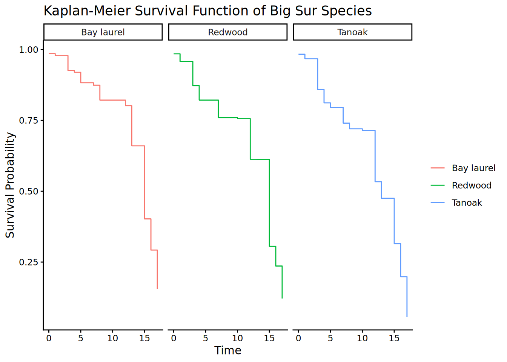
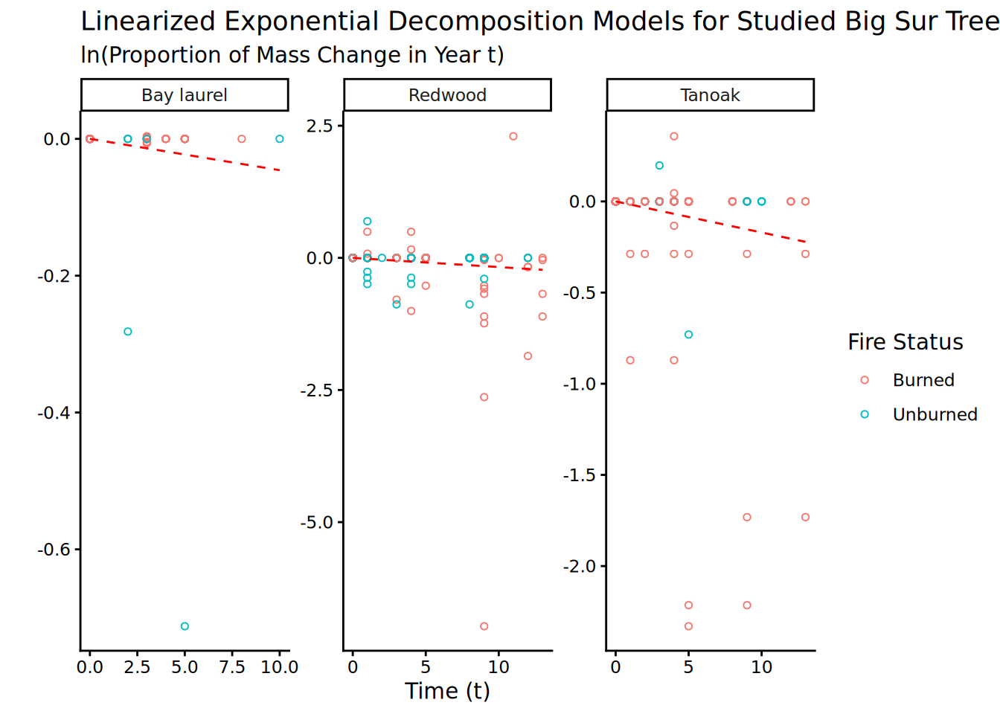

library(tidyverse)
library(broom)
library(gtsummary)
library(survival)
library(ggsurvfit)
library(lme4)
library(lmerTest)
library(here)
library(knitr)Big-sur data analysis
Project Hub
Table of Contents:
Objectives: quantifying fire/disease impacts
- Quantify biomass, stem density changes pre to post fire. Compare across burn scar, species, and status.
- Used mixed effects models to understand underlying relationships.
- Used mixed effects models to understand underlying relationships.
- Track stems through time to quantify rates of mortality, snag fall and CWD decomposition.
- Use survival analysis (mortality), ?? (snag fall), regression (CWD decomp.)
Needed libraries
Recycled functions
read_me <- function(path){
read_csv(here("data", path))
}
export_image <- function(img, path){
ggsave(filename = here("exports", path), plot=img, width=12, height=8)
}
grey_theme <- function() {
theme(
plot.title = element_text(
size = 16,
family = "Times New Roman",
face = "italic",
color = "black",
margin = margin(b = 15)
),
# add border 1)
panel.border = element_rect(colour = "black", fill = NA, linetype = 2),
# color background 2)
panel.background = element_rect(fill = "white"),
# modify grid 3)
panel.grid.major.x = element_line(colour = "grey", linetype = 3, linewidth = 0.5),
panel.grid.minor.x = element_blank(),
panel.grid.major.y = element_line(colour = "grey", linetype = 3, linewidth = 0.5),
panel.grid.minor.y = element_blank(),
# modify text, axis and colour 4) and 5)
axis.text = element_text(colour = "black", face = "italic", family = "Times New Roman"),
axis.title = element_text(colour = "black", family = "Times New Roman"),
axis.ticks = element_line(colour = "black"),
# legend at the bottom 6)
legend.position = "bottom"
)
}Univariate statistics of fire and disease impacts
Living Biomass changes
biomass_changes <- read_me("./clean/post_fire_summary.csv")
burn_change <- function(burn, time1) {
df <- biomass_changes |>
filter(BurnScar == burn) |>
select(!c(Elevation,Slope,Fire)) |>
mutate(Pre = case_when(
SampleYear < time1 & SampleYear > time1-5 ~ "Pre",
SampleYear >= time1 & SampleYear <= time1+ 3 ~ "Post",
TRUE ~ "NA"))
df_mod1 <- df |>
filter(Pre %in% c("Pre","Post")) |>
group_by(Plot, Species, BurnScar, PRam, Pre) |>
summarise(
TotalStem = sum(TotalStem, na.rm = TRUE),
LiveBiomass = sum(LiveBiomass, na.rm = TRUE),
.groups = "drop"
) |>
pivot_wider(names_from="Pre", values_from=c("TotalStem","LiveBiomass"))
# only want to evaluate data with both pre and post
df_mod2 <- na.omit(df_mod1)
df_mod3 <- df_mod2 |>
mutate(ChangeStem = TotalStem_Post - TotalStem_Pre,
ChangeBiomass = LiveBiomass_Post - LiveBiomass_Pre) |>
select(c(1,2,3,4,9,10))
return(df_mod3)
}
# apply summary function to dataset we want
sites_tree <- tibble(
burn = c("dolan", "sober", "chalk", "control" ),
time1 = c(2020, 2016, 2007, 2007 )
)
demo_tree <- pmap_df(sites_tree, burn_change)
post_fire_summary_biomass <- demo_tree |>
group_by(Species, BurnScar) |>
summarize( n = n(),
MeanStemChange = mean(ChangeStem, na.rm=TRUE),
MeanBiomassChange = mean(ChangeBiomass, na.rm=TRUE),
MedianStemChange = median(ChangeStem, na.rm = TRUE),
MedianBiomassChange = median(ChangeBiomass, na.rm = TRUE),
SdStemChange = sd(ChangeStem, na.rm=TRUE),
SdBiomassChange = sd(ChangeBiomass, na.rm=TRUE)
) |>
rename(
`Mean Change in Stem Density` = 3,
`Mean Change in Biomass` = 4,
`Median Change in Stem Density` = 5,
`Median Change in Biomass` = 6,
`SD Change in Stem Density` = 7,
`SD Change in Biomass` = 8)
kable(post_fire_summary_biomass)| Species | BurnScar | Mean Change in Stem Density | Mean Change in Biomass | Median Change in Stem Density | Median Change in Biomass | SD Change in Stem Density | SD Change in Biomass | SdBiomassChange |
|---|---|---|---|---|---|---|---|---|
| ARME | control | 2 | 46.000000 | 902.8045 | 46.0 | 902.8045 | 65.0538239 | 739.7362 |
| ARME | dolan | 1 | -63.000000 | -3027.2720 | -63.0 | -3027.2720 | NA | NA |
| ARME | sober | 1 | 7.000000 | -123246.6955 | 7.0 | -123246.6955 | NA | NA |
| LIDE | chalk | 2 | -15.500000 | -59953.2096 | -15.5 | -59953.2096 | 23.3345238 | 64628.9060 |
| LIDE | control | 7 | -11.428571 | -39376.3353 | -1.0 | -186.6154 | 25.1452921 | 110599.7992 |
| LIDE | dolan | 1 | -102.000000 | -26804.3274 | -102.0 | -26804.3274 | NA | NA |
| LIDE | sober | 7 | -31.714286 | -72421.2930 | -30.0 | -1713.1601 | 20.9659588 | 179384.1459 |
| QUAG | chalk | 1 | -17.000000 | -248297.3024 | -17.0 | -248297.3024 | NA | NA |
| QUAG | control | 3 | -3.333333 | -48965.5711 | -3.0 | -50016.3334 | 1.5275252 | 47378.7436 |
| QUAG | dolan | 4 | -2.750000 | -26357.2068 | -2.5 | -28158.3407 | 0.9574271 | 22332.6143 |
| QUAG | sober | 1 | -1.000000 | -22534.8748 | -1.0 | -22534.8748 | NA | NA |
| SESE | chalk | 3 | 13.333333 | -429923.7491 | 15.0 | -527563.8472 | 22.5462488 | 389573.0767 |
| SESE | control | 6 | 0.500000 | -90133.2138 | 2.0 | -2288.8827 | 11.2205169 | 297444.0134 |
| SESE | dolan | 8 | -70.875000 | 31088.0100 | -60.5 | -420.0842 | 44.7770270 | 139804.9677 |
| SESE | sober | 7 | 24.857143 | -143248.2514 | 29.0 | -45464.2839 | 34.8780187 | 221379.3432 |
| UMCA | chalk | 3 | -20.000000 | -100282.7510 | -38.0 | -130572.4163 | 42.9301759 | 88196.1498 |
| UMCA | control | 8 | -2.125000 | -615.0360 | -0.5 | 264.4450 | 14.3271720 | 2438.0854 |
| UMCA | dolan | 5 | -33.800000 | -34933.3956 | -18.0 | -6603.0926 | 44.7627077 | 42222.7330 |
| UMCA | sober | 7 | 67.857143 | -32948.9578 | 15.0 | -23116.0977 | 96.8356487 | 38988.3425 |
CWD Biomass changes
– Influence of species,disease,fire on decomposition rate of CWD.
– Linearized exponential decay model iterated across the species.
– Aim to estimate values of k and compare between plot conditions.
Questions I hope to answer
How do fire, disease and species impact decomposition rates?
Is there a linear relationship between change in mass and time?
– This piggy backs off earlier research conducted by Dr.Cobb. I am utilizing a known equation for leaf litter decay. Results are simple linear regression, just a lot of build up.
– Improvements: Split the dataset into burned/unburned, run individual models for each
cwd_fire <- read_me("./clean/cwd_mass_change_fire.csv")
burn_cwd_change <- function(burn, time1) {
df <- cwd_fire |>
filter(BurnScar == burn) |>
mutate(Time = case_when(
SampleYear < time1 & SampleYear > time1-5 ~ "Pre",
SampleYear >= time1 & SampleYear <= time1+ 3 ~ "Post",
TRUE ~ "NA"))
df_mod1 <- df |>
filter(Time %in% c("Pre","Post")) |>
group_by(Plot, BurnScar, Time) |>
summarise(
Biomass = sum(PlotCwdMass, na.rm = TRUE)) |>
pivot_wider(names_from="Time", values_from="Biomass",names_expand = TRUE)
df_mod2 <- df_mod1 |>
filter(!is.na(Pre) & !is.na(Post))
df_mod3 <- df_mod2 |>
mutate(ChangeBiomass = Post - Pre)
return(df_mod3)
}
sites_cwd <- tibble(
burn = c("dolan", "sober", "control" ),
time1 = c(2020, 2016, 2013 )
)
cwd_demo <- pmap_df(sites_cwd, burn_cwd_change)
post_fire_cwd_summary <- cwd_demo |>
group_by(BurnScar) |>
summarize( n = n(),
MeanBiomassChange = mean(ChangeBiomass, na.rm=TRUE),
MedianBiomassChange = median(ChangeBiomass, na.rm = TRUE),
SdBiomassChange = sd(ChangeBiomass, na.rm=TRUE),
MinBiomassChange = min(ChangeBiomass, na.rm=TRUE),
MaxBiomassChange = max(ChangeBiomass, na.rm=TRUE)
) |>
rename(`Burn Scar` = 1,
`Mean Change in Cwd Biomass` = 3,
`Median Change in Cwd Biomass` = 4,
`SD Change in Cwd Biomass` = 5,
`Min Change in Cwd Biomass` = 6,
`Max Change in Cwd Biomass` = 7) |>
mutate(`Burn Scar` = case_when(`Burn Scar` == "control" ~ "Control",
`Burn Scar` == "dolan" ~ "Dolan Fire",
`Burn Scar` == "sober" ~ "Sobreanes Fire"))
kable(post_fire_cwd_summary)| Burn Scar | n | Mean Change in Cwd Biomass | Median Change in Cwd Biomass | SD Change in Cwd Biomass | Min Change in Cwd Biomass | Max Change in Cwd Biomass |
|---|---|---|---|---|---|---|
| Control | 17 | -0.9676349 | 0.00000 | 5.172682 | -12.17220 | 6.193899 |
| Dolan Fire | 9 | -30.9799372 | -27.73283 | 25.644291 | -81.38109 | 9.029248 |
| Sobreanes Fire | 7 | -91.0268759 | -48.78311 | 195.065187 | -480.46729 | 94.885095 |
Underlying drivers of biomass and stem density changes
Mixed effects models
– Multiple regression with mixed effects models iterated across species
- Attempt to understand drivers of biomass changes. Is disease and fire interacting to reduce biomass? Is it even across species.
- Improvements: Run multiple models per species with different explanatory variables, take weighted AIC and weighted effects.
Questions I hope to answer
Which features, topographic or epidemiological, are driving biomass changes in Redwood forests?
Is there a linear relationship between the fixed explanatory variables and biomass?
– P-values for fixed variables below the 0.05 threshold will allow us to reject our null hypothesis and indicate a linear relationship between a fixed explanatory variable and biomass.
biomass <- read_me("./clean/livebiomass_mixedmodel.csv")
species_df <- unique(biomass$Species)
biomass_model <- function(species){
df1 <- biomass |>
filter(Species == {{species}})
mixed_model <- lmer(LiveBiomass ~ PlotCwdMass + HostCwdMass + Elevation + Slope + Fire + PRam +
(1|SampleYear) + (1|Plot),
data=df1
)
summary <- summary(mixed_model)
df_summary <- as.data.frame(summary$coefficients) |>
mutate(Species = species)
df_summary$Term = rownames(df_summary)
return(df_summary)
}
species_models <- map_df(species_df, biomass_model)
species_models2 <- species_models |>
rename(p = 5) |>
mutate(Results = ifelse(
p < 0.05,
paste0("**", round(Estimate, 3), " (", formatC(p, format = "e", digits = 2), ")**"),
paste0(round(Estimate, 3), " (", formatC(p, format = "e", digits = 2), ")")
)) |>
select(Species,Term,Results) |>
pivot_wider(names_from="Term", values_from="Results") |>
select(!`(Intercept)`)
species_models3 <- species_models2 |>
rename(Disease = PRam,
`Plot Cwd Mass` = 2,
`Host Cwd Mass` = 3)
kable(species_models3) | Species | Plot Cwd Mass | Host Cwd Mass | Elevation | Slope | Fire | Disease |
|---|---|---|---|---|---|---|
| Tanoak | -7.903 (9.55e-01) | -722.877 (1.69e-02) | -80.062 (9.61e-02) | -1351.583 (2.44e-01) | -13227.554 (3.86e-01) | -4683.889 (7.68e-01) |
| Redwood | -1245.982 (3.66e-02) | 1216.577 (3.28e-01) | 379.966 (3.64e-01) | -12450.521 (1.19e-01) | -235822.107 (1.58e-03) | -73753.792 (3.28e-01) |
| Bay laurel | 2.791 (9.46e-01) | 104.889 (2.89e-01) | -0.762 (9.69e-01) | 694.443 (1.78e-01) | -10740.957 (4.05e-02) | 14737.736 (8.31e-03) |
Logistic regression of mortality status
– Multiple logistic regression iterated across species
- Attempting to predict drivers of mortality given binary health status.
- Improvements: Use mixed effects/survival analysis instead of logistic regression.
Questions I hope to answer
Which features, topographic or epidemiological, are driving mortality in Redwood forests?
Is there a relationship between the explanatory variables and mortality?
– P-values for fixed variables below the 0.05 threshold will allow us to reject our null hypothesis and indicate a relationship between the explanatory variables and mortality.
mortality <- read_me("./clean/mortality_mixedmodel.csv")
species_mortality <- unique(mortality$Species)
mortality_model <- function(species){
df1 <- mortality |>
filter(Species == {{species}})
logistic_model <- glm(Mortality ~ PlotCwdMass + HostCwdMass + Elevation + Slope + Fire + PRam,
data=df1, family = binomial
)
summary <- summary(logistic_model)
df_summary <- as.data.frame(summary$coefficients) |>
mutate(Species = species)
df_summary$Term = rownames(df_summary)
return(df_summary)
}
mortality_results <- map_df(species_mortality, mortality_model)
mortality_results2 <- mortality_results |>
rename(p = 4) |>
mutate(Results = ifelse(
p < 0.05,
paste0("**", round(Estimate, 3), " (", formatC(p, format = "e", digits = 2), ")**"),
paste0(round(Estimate, 3), " (", formatC(p, format = "e", digits = 2), ")")
)) |>
select(Species,Term,Results) |>
pivot_wider(names_from="Term", values_from="Results") |>
select(!`(Intercept)`)
mortality_results3 <- mortality_results2 |>
rename(Disease = PRam,
`Plot Cwd Mass` = 2,
`Host Cwd Mass` = 3)
kable(mortality_results3)| Species | Plot Cwd Mass | Host Cwd Mass | Elevation | Slope | Fire | Disease |
|---|---|---|---|---|---|---|
| Tanoak | -0.001 (8.75e-02) | -0.016 (2.27e-40) | -0.002 (3.38e-56) | -0.03 (9.99e-22) | 0.677 (2.89e-38) | -0.03 (5.04e-01) |
| Redwood | -0.005 (4.98e-14) | -0.016 (1.72e-08) | -0.001 (4.67e-03) | 0.021 (2.39e-04) | 0.368 (1.43e-04) | -0.289 (2.06e-04) |
| Bay laurel | -0.006 (2.05e-05) | 0.001 (6.58e-01) | 0 (1.13e-01) | -0.052 (2.07e-27) | 1.292 (2.15e-40) | -0.252 (2.91e-02) |
Tracking stems through time
Survival Analysis
1. Need to load and transform data into survival tables
- Create t and set t0 = 2006
tree <- read_me("./clean/tree_table_FINAL.csv")
tree1 <- tree |>
filter(Species %in% c("SESE", "LIDE","UMCA")) |>
rename(Disease = p_ram.presence,
Fire = fire_presence) |>
filter(!is.na(Species)) |>
mutate(t = SampleYear - 2006,
Species = case_when(
Species == "SESE" ~ "Redwood",
Species == "LIDE" ~ "Tanoak",
TRUE ~ "Bay laurel")) |>
select(BS_plot, Species, t,RametFail,Disease,Fire, DBH)Kaplian - Meier
s1 <- survfit2(Surv(t,RametFail) ~ Species, data=tree1)
s1 |>
ggsurvfit() +
facet_wrap(~strata) +
theme_classic() +
labs(title="Kaplan-Meier Survival Function of Big Sur Species", x="Time")
#export_image(p1, "surv.png")
summary(s1)Call: survfit(formula = Surv(t, RametFail) ~ Species, data = tree1)
Species=Bay laurel
time n.risk n.event survival std.err lower 95% CI upper 95% CI
0 26193 385 0.985 0.000744 0.984 0.987
1 22175 153 0.979 0.000919 0.977 0.980
3 20619 1101 0.926 0.001762 0.923 0.930
4 18390 121 0.920 0.001835 0.917 0.924
5 17616 719 0.883 0.002232 0.878 0.887
7 14782 143 0.874 0.002322 0.870 0.879
8 14053 841 0.822 0.002797 0.816 0.827
12 10813 265 0.802 0.002990 0.796 0.807
13 9872 1742 0.660 0.003940 0.652 0.668
15 5824 2274 0.402 0.004856 0.393 0.412
16 3260 891 0.292 0.004724 0.283 0.302
17 1218 574 0.155 0.004872 0.145 0.164
Species=Redwood
time n.risk n.event survival std.err lower 95% CI upper 95% CI
0 20836 315 0.985 0.000845 0.983 0.987
1 18513 504 0.958 0.001437 0.955 0.961
3 16048 1432 0.873 0.002522 0.868 0.878
4 13448 783 0.822 0.002957 0.816 0.828
7 11266 847 0.760 0.003413 0.753 0.767
10 8746 43 0.756 0.003443 0.750 0.763
12 8638 1639 0.613 0.004238 0.605 0.621
13 4448 1 0.613 0.004240 0.604 0.621
15 4444 2228 0.305 0.005058 0.296 0.316
16 1612 366 0.236 0.005044 0.226 0.246
17 760 369 0.121 0.005006 0.112 0.132
Species=Tanoak
time n.risk n.event survival std.err lower 95% CI upper 95% CI
0 39700 656 0.983 0.00064 0.9822 0.9847
1 35454 570 0.968 0.00091 0.9659 0.9694
3 31228 3505 0.859 0.00191 0.8553 0.8628
4 26553 1460 0.812 0.00217 0.8076 0.8161
5 23687 465 0.796 0.00225 0.7915 0.8003
7 22547 1571 0.740 0.00249 0.7356 0.7453
8 18834 514 0.720 0.00257 0.7152 0.7253
10 17271 138 0.714 0.00260 0.7094 0.7196
12 16922 4281 0.534 0.00308 0.5277 0.5398
13 10297 1131 0.475 0.00320 0.4689 0.4814
15 8653 2916 0.315 0.00321 0.3088 0.3214
16 5691 2106 0.198 0.00286 0.1929 0.2041
17 2588 1845 0.057 0.00195 0.0533 0.0609survdiff(Surv(t, RametFail) ~ Species, data = tree1)Call:
survdiff(formula = Surv(t, RametFail) ~ Species, data = tree1)
N Observed Expected (O-E)^2/E (O-E)^2/V
Species=Bay laurel 26193 9209 12087 685.475 1249.773
Species=Redwood 20836 8527 8479 0.276 0.442
Species=Tanoak 39700 21158 18328 437.004 1044.174
Chisq= 1416 on 2 degrees of freedom, p= <2e-16 CWD Decomposition
cwd_decay <- read_me("./clean/cwd_decay.csv")
expo_decay <- function(species){
df <- cwd_decay |>
filter(Species == species)
model <- nls(Y ~ -k*t, data=df, start=list(k=0.7))
df$PredictedY <- predict(model)
summary <- summary(model)
return(df)
}
# apply model function to all species
species_vec <- unique(cwd_decay$Species)
expo_results <- map_df(species_vec, expo_decay)
# need to prepare for visuals
expo_results2 <- expo_results |>
mutate(Fire = as.factor(Fire)) |>
drop_na() |>
mutate(Burn = ifelse(Fire == 0, "Unburned", "Burned"))
expo_results2 |>
ggplot(aes(x=t,y=Y, color=Burn)) +
geom_point(shape=1, size=1.3) +
geom_line(aes(x=t,y=PredictedY), color="red", linetype="dashed") +
facet_wrap(~Species,scales = "free") +
labs(title="Linearized Exponential Decomposition Models for Studied Big Sur Trees", x="Time (t)", y="", subtitle="ln(Proportion of Mass Change in Year t)",
color="Fire Status") +
theme_classic()